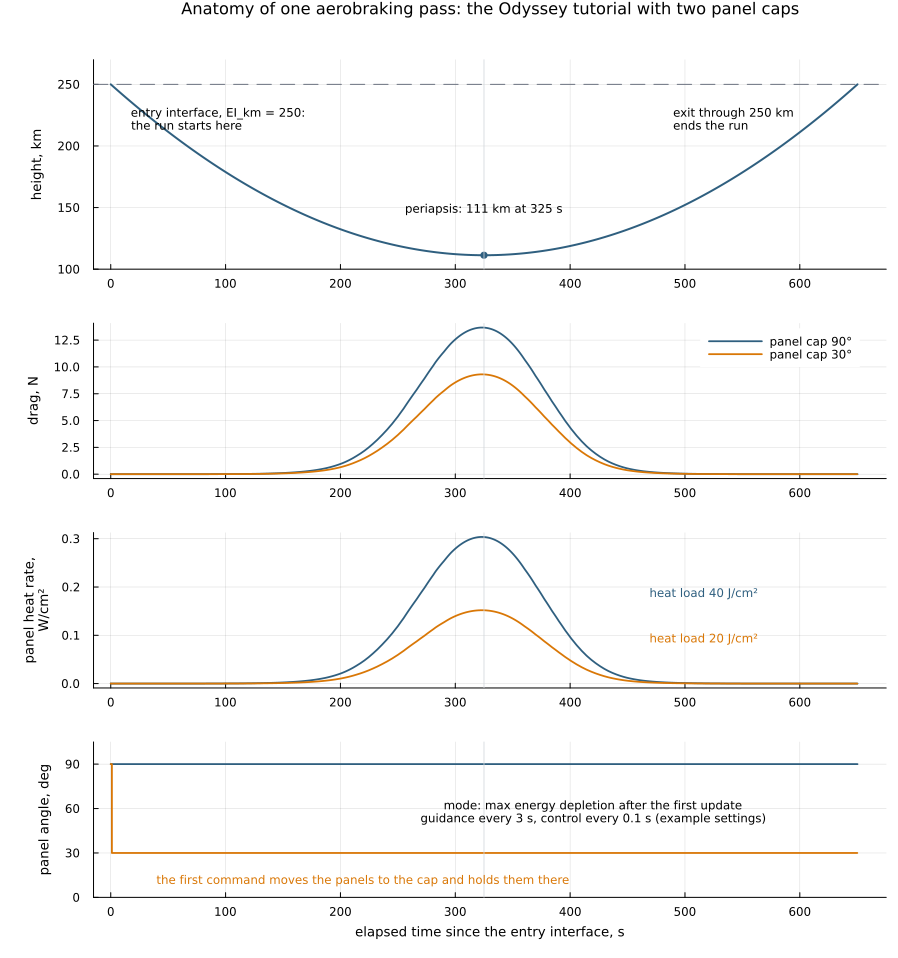

Energy Depletion Guidance for aerobraking
Requires the optional SpaceAGORAEDG companion; see Optional energy-depletion guidance.
Energy Depletion Guidance (EDG) controls the drag a spacecraft produces during an aerobraking passage by changing the angle of selected panels. Opening the panels to the flow usually removes orbital energy faster, but it also raises aerodynamic loading and heating. EDG picks panel commands within that tradeoff. It can seek the greatest energy depletion its configured constraints allow, or aim for an orbital target inside its predicted reachable range.
Falcone and Putnam (2022) developed the original formulation for atmospheric passes with articulating solar panels. Simha, Yu, and Falcone (2026) generalized it to several planetary bodies, structural constraints and targeting. The papers give the scientific background. This page describes what SpaceAGORA implements, and points out where a software setting, a prediction and a physical result have to be kept apart.
The numerical implementation lives in the optional, experimental SpaceAGORAEDG.jl package. SpaceAGORA keeps the public configuration and model constructors, the physical dynamics, the run lifecycle and the panel actuation. Install the supported pair with the optional EDG setup, then load both packages:
using SpaceAGORA, SpaceAGORAEDGThe EDG package boundary lists the versioned queries and who owns which state. If a configuration selects an EDG model and SpaceAGORAEDG is not loaded, preflight raises an error before the simulation starts. The companion's examples/analytic_atmosphere.jl is a short check that the installed packages work together; it does not reproduce either paper and does not measure targeting accuracy.
What the guidance and controller do
The work is split into two decisions. Guidance selects the mode and, when targeting is enabled, evaluates the reachable energy bracket. Control turns that decision into a panel angle, applies the active heat-rate and structural restrictions, and updates the selected panel geometry at each control callback. The aerodynamic and thermal models then evaluate the resulting geometry during propagation.
A panel turns to its commanded angle at once unless a PanelHinge is mounted on its link with add_actuator!. With a hinge, the panel moves toward the command at each control callback within the hinge's angle and rate limits, and the aerodynamic and thermal models see the angle it actually reached. Guidance still predicts with the commanded angles, so a slow hinge makes its predictions optimistic. A hinge whose axis is the absolute value of the link's offset and that has no limits moves the panel exactly as the default does.
The two public model types are AerobrakingEnergyDepletionGuidanceModel and AerobrakingEnergyDepletionControlModel. They share one immutable AerobrakingEnergyDepletionConfig and one mutable AerobrakingEnergyDepletionState, and the state has to be the same object: a controller that holds a separate state, even an identical one, never sees the guidance decisions. Simulation preflight checks that the two models share the state and have equal configurations, and that the state has one entry per spacecraft.
In :max_energy_depletion mode the controller starts from the configured maximum angle. The selected submodes can lower that command to satisfy the internal heat-rate or structural model, and heat-load control can schedule a low-drag interval within the passage. The mode name describes the objective of the policy. It does not claim that every propagated case is a globally optimal trajectory.
In :targeting mode, guidance evaluates one-switch candidates placed on the controller's actual command grid, so each candidate is one the controller can execute. Each candidate propagates its own atmospheric passage, checks the remaining heat budget and whether the minimum angle stays admissible, and coasts its exit state to apoapsis to map it onto the target energy. The admissible family is a contiguous, ordered prefix of that grid. Passing this check on the sampled family is not a proof of optimality over a continuous family.
Guidance owns the complete plan and its replanning clock. Until the planned switch is applied, it replans on a due guidance callback, every two seconds by default. When targeting guidance and control fall due at the same time, guidance runs first, and control uses the new plan without solving again or advancing that clock. After the switch, the plan stays cached for the rest of the passage. Switch times are elapsed simulation seconds, not durations since the last update.
If the target needs less depletion than even the minimum-drag candidate gives, guidance selects minimum drag. If it needs more depletion than the sampled family reaches, guidance selects maximum depletion when that mode is enabled and :safe_low_drag otherwise. :safe_low_drag means the minimum angle; it does not show that the constraints are met. When no candidate passes the check, the failure stays visible in the state even though a fallback command is applied, and a failed sampled bracket does not prove that every physical trajectory is infeasible.
One passage of the Odyssey tutorial shows these pieces in a run. Guidance selects maximum energy depletion at its first update, and because the example sets no heat-rate limit, the controller holds the panels at the configured cap for the whole passage. The lower cap gives less drag, a lower peak heat rate and half the heat load.

Energy, heating, and loading
The energy used for orbital diagnostics is the planet-relative two-body specific orbital energy,
\[\varepsilon = \frac{\lVert\mathbf{v}_{\mathrm{i}}\rVert^2}{2} - \frac{\mu}{\lVert\mathbf{r}_{\mathrm{i}}\rVert},\]
with position and velocity in the inertial frame and the result in J/kg. For a bound Keplerian ellipse, $\varepsilon=-\mu/(r_a+r_p)$, which is why target_apoapsis_radius_m is an apoapsis radius measured from the planet's center, in meters, and not an altitude. The target mapping uses each candidate's own predicted periapsis and its coast energy change under the configured gravity, so do not assume a fixed periapsis or one correction shared by all candidates. With other perturbations enabled, the two-body energy is still a useful diagnostic, but not all of its change comes from atmospheric drag.
Atmospheric loading uses the air-relative velocity in the rotating planet frame. The environment query includes local wind when wind is enabled, so this speed generally differs from the inertial speed in the energy expression. Dynamic pressure is $q_{\mathrm{dyn}}=\rho V_{\mathrm{air}}^2/2$, in Pa.
Heat rate and heat load are different quantities. EDG's heat-rate limit is in W/cm² and its heat-load limit in J/cm². Heat load is the time integral of heat rate on a link, not the instantaneous heat rate at the current state. Converting either per-square-centimeter unit to its per-square-meter counterpart introduces a factor of $10^4$.
The controller chooses an angle from an internal Maxwellian heat-rate estimate that takes the wall temperature equal to the sampled atmospheric temperature. The propagated thermal model uses the configured thermal settings and the executed link geometry, so its saved heat rates can differ from last_heat_rate_w_cm2, which records the controller's estimate. Judge a thermal constraint by the propagated panel quantities as well as by the guidance diagnostics.
The heat budget used for planning is passage heat: the largest of the individual controlled-panel increments since the geodetic entry event. At entry the controller copies each panel's heat integral as that panel's baseline and later subtracts it from that panel's current value. It never subtracts the largest baseline from the largest current integral, and it never resets the physical heat. A run that starts inside the atmosphere uses a zero baseline. last_heat_load_j_cm2 keeps the cumulative value as telemetry; last_pass_heat_load_j_cm2 records the passage value that planning uses.
Heat-load control plans two switches per passage and holds the minimum angle between them. With the :closed_form solver, second_switch_reevaluation updates the second switch during the passage. heat_load_security_mode adds a predictive check at each control update: while the planned profile is predicted to reach the heat-load limit, the controller commands the minimum angle. Crossing the limit does not by itself clip the command; last_heat_budget_status reports :exhausted.
The structural setting needs an equally careful reading. The controller uses the plate-coefficient proxy of the journal formulation: the reference areas of the controlled panels are evaluated at the candidate angle, and all remaining reference area is treated as bus area at π/2. Both groups use the root link's reflection coefficient. With $A_D(\alpha)$ the resulting drag area at a candidate angle, the pressure-valued setting defines the modeled force bound
\[D(\alpha) = q_{\mathrm{dyn}} A_D(\alpha) \;\leq\; D_{\mathrm{limit}} = p_{\mathrm{limit}} A_D(\alpha_{\max}).\]
This proxy is separate from the trajectory predictor, which evaluates the core aerodynamic coefficients link by link. structural_load_limit_pa is therefore a drag-based load proxy normalized by a reference drag area. It is neither a finite-element stress limit nor a direct bound on ambient dynamic pressure, and its relation to a spacecraft's hardware limits has to be established for that spacecraft.
If even the minimum angle exceeds an internal heat-rate or structural bound, that control calculation returns the minimum angle and the simulation keeps running. Commands are also held between control callbacks, so checking a constraint only at those callbacks does not establish its maximum over the passage.
Configure a paired EDG model
The following builds a paired model for a spacecraft whose controllable panels are links 2 and 3. Like the panel-cap exercise in the Odyssey tutorial, it sets an infinite heat-rate threshold, so the cap is never reduced. It shows how the pieces fit together; it is not a thermal-protection policy.
using SpaceAGORA
edg_config = AerobrakingEnergyDepletionConfig(
guidance_modes = (:max_energy_depletion,),
max_energy_submodes = (:heat_rate,),
controlled_panel_links = (2, 3),
max_alpha_rad = deg2rad(30.0),
min_alpha_rad = 1e-4,
heat_rate_limit_w_cm2 = Inf,
)
edg_state = AerobrakingEnergyDepletionState(num_sats = 1)
edg_guidance = AerobrakingEnergyDepletionGuidanceModel(edg_config, edg_state)
edg_control = AerobrakingEnergyDepletionControlModel(edg_config, edg_state)
guidance_model = GuidanceModel(
guidance_effectors = (edg_guidance,),
guidance_rates = [1 / 3],
)
control_model = ControlModel(
control_effectors = (edg_control,),
control_rates = [1 / 3],
)Pass guidance_model and control_model to the SimulationConfiguration constructor together with the mission, environment, dynamics and initial-time settings for the case, and set num_sats to the number of spacecraft in that configuration. The EDG state is indexed by each spacecraft's position in the configuration, while controlled_panel_links indexes links within each spacecraft. Every selected link must exist and must be a rotatable link other than the root; otherwise the panel command raises an error. On a spacecraft with articulated dynamics, this kinematic panel control works only on :fixed links that belong to the root body. Setup refuses a panel on a moving joint body, because EDG has no joint motor to drive that body.
Despite their names, guidance_rates and control_rates hold callback periods in seconds. The example above runs guidance and control every 1/3 s, or 3 Hz, the cadence of the EDG package's retained comparison cases. The Odyssey tutorial's script, examples/odyssey_surrogate.jl, uses different periods: guidance every 3 s and control every 0.1 s. Choose the periods together with the integration and output resolution the passage needs. A shorter period is not, by itself, evidence of a more accurate prediction or of a constraint margin.
The control model's panel effector (its aoa_effector keyword, a SolarPanelAngleOfAttackControlModel) uses the configuration's controlled_panel_links by default. Keep the prediction and actuation selections the same unless you have deliberately modeled and checked a different arrangement. In fixed-attitude runs, the force and thermal models must also respond to the changed panel geometry; the Odyssey example uses AerodynamicCoefficientfM(fixed_attitude_incidence=:attitude) for this (see panel angles and heating). Without a mounted PanelHinge, the EDG effector turns a panel straight to the commanded angle. With one, it moves the panel at control ticks within the hinge's angle and rate limits. It does not create a hinge, add joint dynamics or add a spacecraft attitude controller. As noted above, the predictor works with the commanded angle, which can differ from the angle a rate-limited hinge has reached.
The main settings of AerobrakingEnergyDepletionConfig are:
| Setting | Meaning |
|---|---|
guidance_modes | (:max_energy_depletion,) (the default), (:targeting,), or both. Including maximum depletion makes it available as the targeting fallback. |
max_energy_submodes | A nonempty selection from :heat_rate, :structural_load and :heat_load; the default selects all three. These choose which restrictions the EDG calculations consider. |
controlled_panel_links | Indices, from 1, of the controlled panel links within each spacecraft; default (2, 3). |
min_alpha_rad, max_alpha_rad | Command bounds in radians, default 1e-4 and π/2. Both must be finite, with 0 ≤ min_alpha_rad ≤ max_alpha_rad. |
heat_rate_limit_w_cm2 | Internal heat-rate threshold in W/cm². Use a physically justified positive value when heat-rate protection is intended. |
heat_load_limit_j_cm2 | Passage heat-load threshold in J/cm², measured from per-panel entry baselines. |
structural_load_limit_pa | Pressure-valued parameter that defines the drag-based force bound described above. |
target_apoapsis_radius_m | Desired apoapsis radius in meters. The default, NaN, cannot be targeted; set a finite positive radius when enabling targeting. |
heat_load_switch_solver | :closed_form (the default) or :tpbvp_integration for the heat-load switch calculation. Choosing a solver does not establish physical validity for a new atmosphere or vehicle. |
planning_horizon_s | Upper bound on the passage length the predictions cover, default 5000 s. It is not the mission duration. |
switch_recompute_interval_s | Targeting replan interval owned by guidance, default 2 s, used until the planned switch is applied. |
second_switch_reevaluation | Update the second heat-load switch during the passage (:closed_form solver only); default true. |
heat_load_security_mode | Enable the predictive heat-load check described above; default true. |
targeting_certification_samples | Checked by the constructor (at least 2, default 9) but not used by the current targeting planner, which samples the controller's command grid instead. |
targeting_energy_order_tolerance_jkg | Checked by the constructor (finite and nonnegative, default 1e-3 J/kg) but not used; the planner requires strictly decreasing candidate energies. |
targeting_heat_load_tolerance_j_cm2 | Checked by the constructor (finite and nonnegative, default 1e-6 J/cm²) but not used; the planner compares predicted heat directly with heat_load_limit_j_cm2. |
The physical limits default to Inf, and a selected submode with an infinite limit imposes no finite threshold. For the heat-rate and structural restrictions, a zero or negative limit is treated as no restriction, and the status fields report :invalid_limit; it does not ask for zero heating or zero loading. Set limits from the vehicle and mission requirements and check them against the propagated quantities. The targeting replan interval is separate from the control period: commands stay held between control callbacks, and an excursion between two callbacks is still a violation.
For a first complete run, use the Odyssey surrogate aerobraking tutorial. Its example has its own environment. From the repository root, prepare it and run the example with:
julia --project=examples/odyssey_surrogate_env examples/odyssey_surrogate_env/setup.jl
julia --project=examples/odyssey_surrogate_env examples/odyssey_surrogate.jlThe setup instantiates the environment and adds the EDG provider. On its first run the example downloads its frozen Mars atmosphere grid, SPICE kernels and Mars gravity coefficients (--offline uses installed assets only), and it does not need a native GRAM installation. The default comparison changes the panel cap from 90° to 30° and records the resulting trajectories and heating. It does not exercise targeting, a finite thermal threshold or a stochastic GRAM campaign. That makes it a good installation and geometry exercise, not a validation of every EDG mode.
Read the result and the guidance state
Call run_simulation(args; return_results=true) to keep the results table and the configuration that actually ran. Under the default isolate_state=true, SpaceAGORA deep-copies the input configuration, including the state shared by guidance and control. The caller's original edg_state therefore does not hold the completed run's diagnostics.
For a configuration args that contains the paired guidance model above:
result = run_simulation(args; return_results = true)
run_guidance = only(filter(
model -> model isa AerobrakingEnergyDepletionGuidanceModel,
result.configuration.guidance_model.guidance_effectors,
))
state = run_guidance.state
state.selected_mode[1]
state.last_alpha_rad[1]
state.last_heat_load_j_cm2[1]result.table contains the configured saved quantities, and result.files lists the files the run wrote. Passing return_solution=true as well keeps the ODE solution in result.solution. The EDG state holds current or last-update diagnostics, not a time history:
| State fields | Interpretation |
|---|---|
selected_mode, targeting_active, safe_low_drag | Current mode and fallback status. A passage reset can return the mode to :inactive. |
target_energy_jkg, bracket_min_energy_jkg, bracket_max_energy_jkg | Target and predicted bracket energies in J/kg. Read them together with the mode and bracketing flags. |
energy_bracketing_evaluated, energy_bracketing_count | Whether the current passage has been bracketed, and the number of bracketing evaluations so far in the run. |
targeting_switch_s, heat_load_switches_s | Cached switch times in elapsed simulation seconds. Infinite values mean no switch is scheduled. |
targeting_diagnostics | The last targeting plan with its status, including a failed check when a fallback was applied. |
heat_load_switch_solved, last_switch_solve_t | Bookkeeping for the heat-load solve and the latest switch calculation. A recorded calculation is not an independent proof of feasibility. |
last_alpha_rad, last_alpha_heat_rate_rad, last_alpha_structural_rad | Applied command and the most recently computed angle bounds, in radians. |
last_heat_rate_w_cm2, last_heat_load_j_cm2, last_dynamic_pressure_pa | Internal heat-rate estimate, cumulative heat load of the controlled links, and sampled dynamic pressure. |
last_pass_heat_load_j_cm2 | Passage heat load used for planning, in J/cm². |
last_heat_rate_status, last_structural_load_status, last_heat_budget_status | Status of each restriction at the last update, for example :within_limit, :above_limit_at_minimum_angle, :unbounded or :exhausted. These are instantaneous model observations, not trajectory feasibility results. |
For a passage analysis, save the command, mode, switch diagnostics, panel heat rates and heat loads alongside position, velocity, density and time. Use SaveField getters to keep custom diagnostic quantities. The outputs guide describes the results and trajectory recorder, and the Odyssey example shows how to record the executed panel geometry. Saving that geometry matters, because recomputing an old state with the panels' final orientation does not reconstruct the forces or heat rates applied at that time.
A whole-spacecraft maximum may include the bus, whereas the EDG heat-load input covers only the selected links. Label the panel set and aggregation used in each plot or reported margin. Also keep apart a predicted exit energy and the energy measured at the propagated exit event, and an internal heat estimate and the thermal model's output. These comparisons are what reveal prediction error and unmet constraints.
State between passages and repeated runs
Each run_simulation call initializes the EDG state, counters included, so reusing a configuration starts a fresh EDG run. Default state isolation keeps guidance and control sharing one state in the copied configuration. With isolate_state=false, EDG still initializes its state, but the caller is responsible for the configuration's other mutable objects.
Geodetic EDG entry and exit clear the affected spacecraft's cached bracket, mode flags and switch times. A repeated notification of the same crossing does not erase a newly established plan, and ordinary callbacks within a passage keep the cache. Bracketing counts accumulate across the passages of a run. The last-command telemetry stays until the next update, and the reset clears neither the physical heat loads nor the panel geometry. The next control callback can change the command between passages according to the configured mode's default.
The engine's solver-phase events use a spherical radius, while EDG uses its own geodetic surface for heat accounting and prediction. EDG observes the accepted dense trajectory before existing callback effects and before the discrete guidance and control callbacks. It adds no continuous root that could consume a coincident user stop. The original callbacks keep their conditions, root-finding options, order and simultaneous-event masks, so the solver decides between coincident events as it did before; this does not promise that every coincident user callback runs.
Each accepted step is scanned at eleven evenly spaced nodes, and every detected geodetic sign change is refined with dense interpolation. Each panel's heat is copied at the refined crossing, before a later user callback can change the physical heat. The scan is bounded, so it can miss an arbitrarily short excursion between nodes. heat_boundary_entry_time_s and heat_boundary_exit_time_s record the refined crossing times, and heat_boundary_observed_at_s records when the bookkeeping consumed the crossing. These diagnostic clocks are separate from the planning clocks.
A callback of your own that stops just before the numerical geodetic sign change keeps its stop behavior; being close to the surface does not count as an EDG crossing. If a scalar continuous callback's condition describes the same geodetic entry-interface surface, wrap the condition with SpaceAGORA.SimulationModel.SimulationCallbacks.EDGGeodeticBoundaryCondition(condition, spacecraft_index, altitude_m). The wrapper calls the original condition unchanged. At initialization it checks the spacecraft index and that altitude_m equals the configured entry-interface altitude in meters, and at each event it requires the event geometry to lie on that surface within frame-transform roundoff. At a declared event, heat is captured at the original solver event time, before the callback's effect. The geodetic normal velocity decides between entry and exit, and a tangent does not force a transition. The registration declares that the condition is that surface; it does not test whether an arbitrary function is mathematically equivalent to it. Only scalar continuous callbacks can be registered; vector and discrete callbacks keep the plain geometric observation. The Odyssey example registers its outbound entry-interface event this way.
Only an actual geodetic transition resets the plan and records passage heat. A spherical phase transition alone, a duplicate observation, or a computed trajectory that only touches the surface tangentially from outside does not start a new passage. A numerically integrated trajectory that does dip below the surface has a short passage in that computed trajectory, even if the analytic ideal is tangent. When an original callback effect moves the spacecraft to the other side, the change is reconciled before the next consumer at the same time. Changes made during initialization define the initial side without inventing an entry or erasing a prepared initial plan. At startup only, a state within transform roundoff of the surface is assigned a side by its geodetic normal velocity; that band is not used for later crossings. A start exactly on the surface with zero normal velocity, such as a periapsis placed exactly on the entry interface, counts as inside. If the spacecraft then rises, the side can stay inside through the coast that follows, so a plan computed at the start can survive the next entry.
Maximum-depletion control can run without a paired guidance model, but targeting needs guidance to build its bracket. A configuration may contain at most one EDG guidance model and one EDG controller. EDG refuses checkpoint writing and resume, because the checkpoint format does not keep its passage history. Save analysis outputs as usual, but do not plan a restart workflow around an EDG checkpoint.
Scope of the current implementation
A run that completes shows that the configured calculation ran. It does not, on its own, establish target accuracy, constraint satisfaction or agreement with a published study. The heat-rate estimate, the trajectory prediction, the atmosphere representation, the held control commands and the propagated vehicle model all contribute to the gap between a planned switch and its achieved result.
The prediction paths do not all see the same atmosphere. The targeting candidates, and the :tpbvp_integration heat-load solver after its first estimate, query the configured atmosphere at each predicted position, with wind. Heat-load planning otherwise uses a fitted density profile built into the EDG package, defined only for Mars, Venus, Earth and Titan, with the planet's reference temperature. Choose an atmosphere and planet that suit the prediction path you exercise, and compare the predicted passage with the propagated one before reading its margins.
The supported scope is bounded and experimental. The EDG package's retained native comparisons cover a fixed targeting case, a depletion passage and a two-passage case. They do not establish accuracy for arbitrary targets, behavior near the heat budget, real-time execution, constraint satisfaction in general or exact reproduction of the journal results. At 3 Hz the depletion and two-passage cases exceed the heat-rate limit between updates, and those excursions remain reported violations. If even the minimum angle exceeds the structural limit, the original minimum-drag policy stays in effect and the infeasibility is reported; EDG adds no abort, limit relaxation or orbit change.
The original calibration inputs, fit settings and the identity of the plotted journal runs have not been recovered. Mars epoch placement, Earth fit normalization and Titan interface and domain differences remain open provenance questions. A study should therefore record its initialization, the exact source and data versions, callback periods, solver settings and the predicted-versus-propagated diagnostics. The numerical shooting route remains experimental reference work, and optimality with a full Cartesian, moving-event adjoint has not been shown.
References
- Falcone, G., and Putnam, Z. R., “Energy Depletion Guidance for Aerobraking Atmospheric Passes,” Journal of Guidance, Control, and Dynamics, Vol. 45, No. 4, 2022, pp. 651–668. DOI: 10.2514/1.G006171.
- Simha, N., Yu, E., and Falcone, G., “Generalized Energy Depletion Guidance for Aerobraking at Mars, Venus, Earth, and Titan,” AIAA SCITECH 2026 Forum, Orlando, FL, 2026, AIAA Paper 2026-1378. DOI: 10.2514/6.2026-1378.
The publications page lists the related SpaceAGORA studies and provides BibTeX for the SciTech paper.